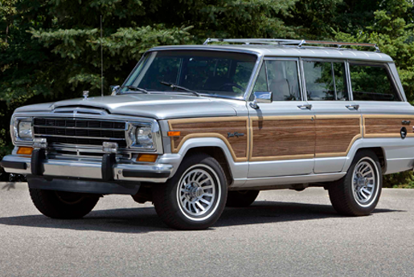
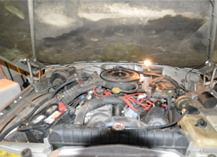

"The Jeep is Americas only real sports car!" - Enzo Ferrari

Putting a DREAM into reality
Ever feel like driving a tank? Well, the military probably won't let you, so get the next best thing: a 1988 Jeep Grand Wagoneer. This thing is a beast, with a 5.9-liter V8 under the hood with 144 hp. It only comes with a 3-speed automatic transmission,no overdrive available, this bad boy gets roughly 11 MPG around the city. Introduced way back ing 1964, this aging aristocrat has changed very little over the years. Surprisingly, there are a few comforts available in this beast of a road machine. Air conditioning, power windows, and a cassette player all came standard in the 1988 Jeep Grand Wagoneer, though an optional sunroof was available for more daring Jeep owners. The sunroof wasn't powered, though - can't make owning a tank too easy.
But the most impressive feature of the Grand Wagoneer is its full-time 4wd system. Know as selec-trac, it permits on-the-fly shifting between 2wd, part-time 4wd and full-time 4wd. The transfer case can also engage into low-range, part-time 4wd that allows the drive to go "anywhere".
A few quick pictures of my Woody before the rebuild
- 
Links relevant to the rebuild
OK, below are a list of links to websites that all have helped me in some way of rebuilding my Woody. If you know of any more sites that could help me with parts, installation know-how's, etc, I would greatly appreciate the feedback! Please e-mail me: LelandJLK@gmail.com